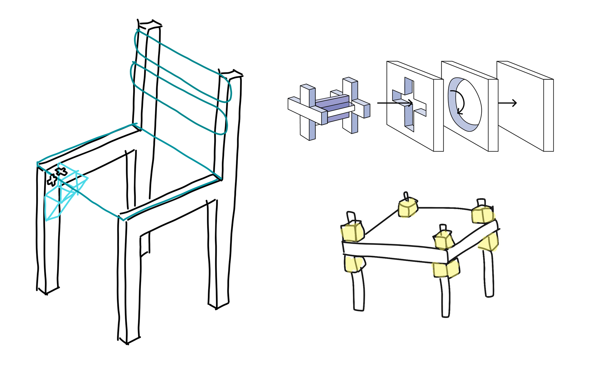
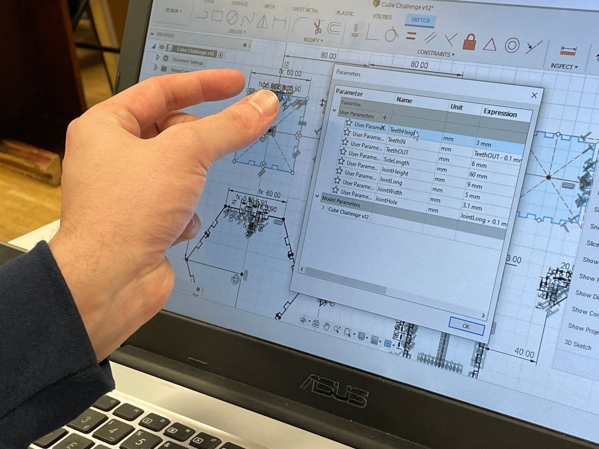
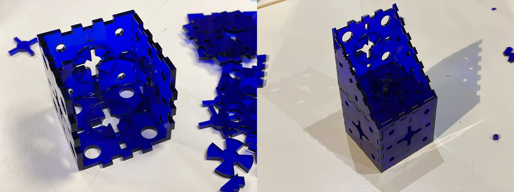

/MICROCHALLENGE_1
(20_february_2022)
You can check the whole project by tapping here: MODBOX.
For this first Challenge, I teamed up with Paula Bustos since we were both interested in similar
things such as giving a second life to products and converting trash to extend products' lives.
The goals for this Challenge were to apply the things learnt during the past weeks of FabAcademy:
HTML, 2D and 3D modelling, parametric design, laser-cut and vinyl cut.
By mixing our areas of interest we arrived at the conclusion we needed to do something that could
help turn trash into valid objects again. However, every piece of trash and every broken object
found on the streets is different to another, and that meant that we just couldn't pick a broken
chair and repair it. We needed to create a method to repair it.
After thinking about it for a while, we decided to create a modular object that would allow us to
create joints, corners and brackets but at the same time create a different aesthetic to the objects.
It could also be used to add complements to the objects to add other functionalities. Creating this
module would also help to its replicability and adaptability to any other object.

We started the design process by creating some sketches of the modules, and we designed them in a
cube shape. We thought this would be easy to assemble, but later we discovered it was trickier than
expected. In any case, we made some research about existing projects and took some of them as
examples of what we wanted to do.
We modelled the cubes using Fusion360 and made them parametric so that we could change the thickness
of the material and the size of the fingers. The most complex part of this project however was the
way to assemble the cubes to the broken parts and also the cubes between them. We didn't think this
would be difficult but there are many factors to take into account, and even more complex if we
wanted the cubes to be closed shapes. We thought of a mechanism that consisted of a kind of a key
that blocked the two cubes in position, and some holes to attach the cube to the trash.

Unfortunately, we started prototyping way too late since the laser cutter was completely booked and
we took some time to create the final files. In the end, got the chance to cut a prototype already
in 3mm acrylic (the one we wanted to use), found some mistakes and corrected them fastly. We finally
cut the final files and started assembling the cubes with the help of some glue.

The idea was to have a piece of furniture completely redesigned with what we had created but we
were really short of time so we just made the cubes and explained how the final product would be.
We also made a website in order to show all the processes we followed and how to use the modules.
To conclude, we think what we presented is just one iteration more since this is a long term project that couldn't be done just in two days. Paula and I are really interested in this kind of experiment and we'll probably develop this idea further, with more time and exploring different technologies and ways of prototyping.